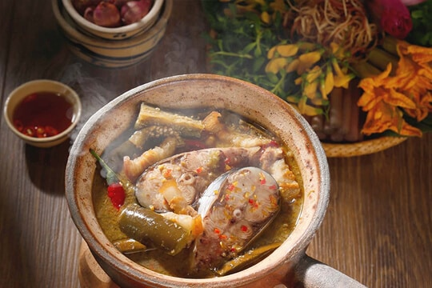

: 17/5/2023
Tuổi thơ tôi gắn liền với quê ngoại - một vùng đất trù phú giáp với Đồng Tháp Mười với những cánh đồng cò bay thẳng cánh, với cá lội đen những dòng kênh.
Tôi vẫn nhớ rất rõ mỗi khi mùa mưa về là mùa cá con nở (nhiều nhất là cá rô), từng đàn cá con nối nhau trôi theo dòng nước từ bưng, ruộng chảy ra những con kênh trôi ra sông.
Cá cứ trôi làm cho bao nhiêu con kênh "nhuộm" thành màu đen. Má và dì tôi thấy tiếc nên lấy mùng xuống nước hứng cá trong mưa dầm.
Cá hứng được đổ xuống chiếc ghe lớn, ăn không hết lấy nấu cho heo ăn hoặc làm phân. Nhưng thấy tiếc nên cả hàng xóm cũng xin được hứng thay phiên sau khi má và dì tôi giở cái mùng lên là người hàng xóm hạ cái mùng xuống hứng.
Rồi đến mùa nắng ngoại tôi tát đìa và tát những con kênh quanh nhà. Khi đã tát cạn nước, rất nhiều loại cá: cá lóc, cá trê, cá rô, cá sặc... như từ đâu kéo về nằm đặc kín cả đáy các con kênh.
Cá nhiều đến mức ngoại tôi phải nhờ cả chục người hàng xóm tới làm phụ liên tiếp mấy ngày đêm. Bọn con nít chúng tôi cũng được dịp thức theo ánh sáng đèn manchon và tha hồ bắt cá xẻ khô, bắt chước người lớn nấu nướng tuỳ thích.
Nấu xong rồi không ăn được vì không biết nấu. Nhưng không bị người lớn la rầy vì chẳng đáng gì so với cá bắt được.
Cô bác hàng xóm làm giúp xong được trả ơn bằng cá (không cân bằng ký lô mà đong bằng thúng hoặc thùng đong lúa - mỗi thùng 20 lít).
Tất nhiên là những người làm cá cứ lo làm cá. Họ sẽ được phục vụ ăn uống đàng hoàng bằng cháo cá lóc, cá lóc nướng trui, cơm với canh chua cá kho...
Làm cá xong ngoại tôi chọn cá để xẻ khô và làm mắm để dành ăn dần. Vậy là sau khi hết cá tươi là tới những món ăn với khô với mắm.
Thôi thì đủ thứ món mắm: mắm lóc chưng nguyên khúc với thịt ba rọi, mắm chiên vàng cho vô chút đường, mắm bằm với thơm và tỏi ớt, mắm sống ăn với cơm nguội, mắm chưng với thịt bằm và trứng, lẩu mắm, mắm kho...
Nhắc lại chuyện xa xưa làm tôi nhớ hoài những món ăn của miền quê thời thơ ấu.

Tôi nhớ món mắm kho ăn với rau sống sao mà ngon lạ ngon lùng! Muốn mắm kho được ngon thì phải trộn hai thứ mắm linh và mắm sặc với nhau rồi cho nước vào nấu cho thịt mắm rã ra, lược lấy nước bỏ xương.
Phi hành tím và tỏi băm nhỏ thật vàng. Cho sả băm vào xào chung cho sả dậy mùi thơm. Thịt heo xắt mỏng cho vào đảo lên cho thịt săn lại, nêm vô chút đường trộn đều cho thấm.
Cho mắm đã lược và nước dừa tươi vào. Khi mắm sôi lên thì cho cá vào. Cá có thể là cá lóc, cá trê hay cá rô đều được.
Khi cá bắt đầu vừa chín tới thì cho thêm khổ qua, cà tím, măng luộc, đậu bắp, đậu đũa, thơm xắt miếng vô. Nêm nếm lại đến khi chín, tắt lửa.
Cho thêm vài trái ớt hoặc lúc phi sả xong cho vô vài trái ớt băm nhuyễn làm cho nồi mắm ngon hơn, thơm hơn.
Mắm kho ăn với bông súng, rau muống bào mỏng, giá, hẹ, rau thơm các loại, bắp chuối bào, và đặc biệt ở miền Tây có loại lá hẹ mọc dưới nước ăn với mắm kho rất ngon và rất hợp.
Một nồi mắm kho thơm lừng với các loại rau mộc mạc của miền quê ăn với cơm nấu từ gạo được canh tác theo kiểu truyền thống trong cái nồi đất mới đúng điệu.
Muốn đúng điệu ăn mắm kho hơn nữa thì lấy mỗi loại rau một chút cho vô chén, chan mắm kho có thêm miếng thịt với chút cá rồi lua vô miệng.
Cắn thêm miếng ớt hiểm xanh mới đã. Cả nhà quây quần trên chiếc đệm trải giữa sân dưới bóng mát. Vừa ăn vừa nhìn những chiếc ghe chèo ngang con kênh trước nhà. Xa xa là đồng lúa mênh mông bao quanh luỹ tre làng.
Mỗi vùng đất đều có những món ăn đặc trưng của nơi đó. Món ăn là những gì tinh túy nhất được sàng lọc từ kinh nghiệm của một cộng đồng liên quan đến văn hóa, hoàn cảnh sinh hoạt, thói quen, địa lý, khí hậu... của cả một cộng đồng.
Chính vì vậy có thể nói rằng món ăn là cái hồn của quê hương. Món ăn không chỉ ngon vì cái giá trị thật của nó mà còn ngon hơn vì món ăn đó đã trở thành kỷ niệm của một thời ấu thơ nơi vùng quê yêu dấu.
Nó khiến cho ai đi xa quê hương cũng cảm thấy nhớ cùng với những hình ảnh của quê cha đất tổ mà chúng ta gọi chung trong hai tiếng "nhớ nhà".
Address: Soc Trang
Phone: 84+865510677
Email: mekongescape83@gmail.com


Copyright by MeKong Escape - © 2023